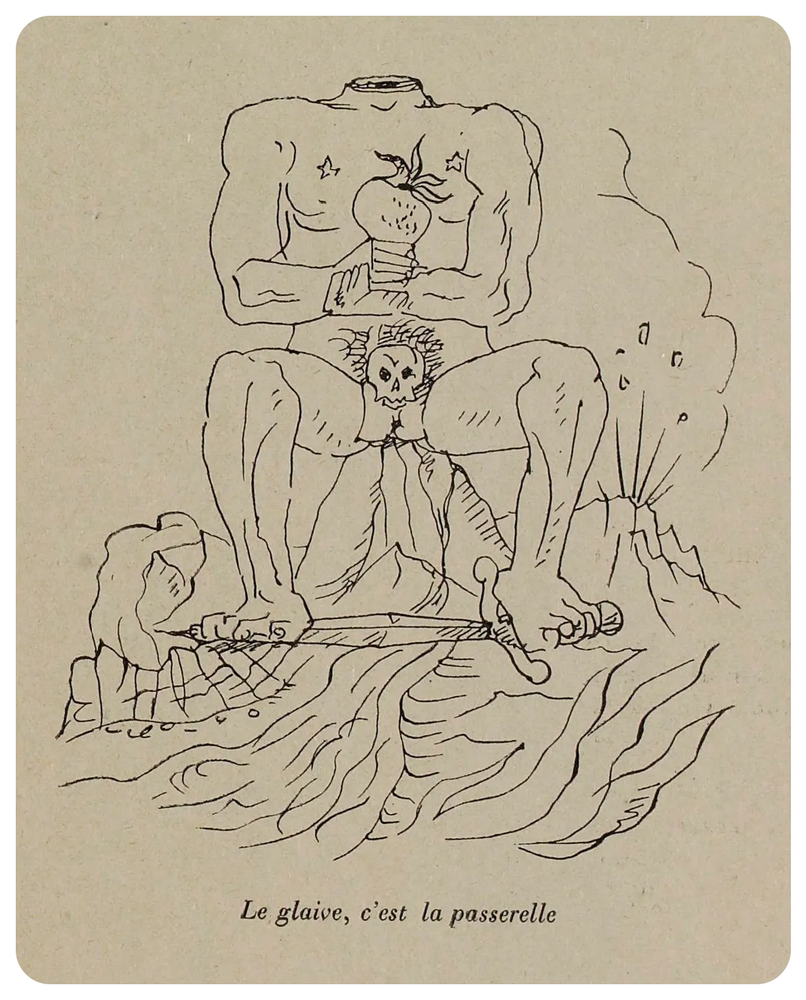
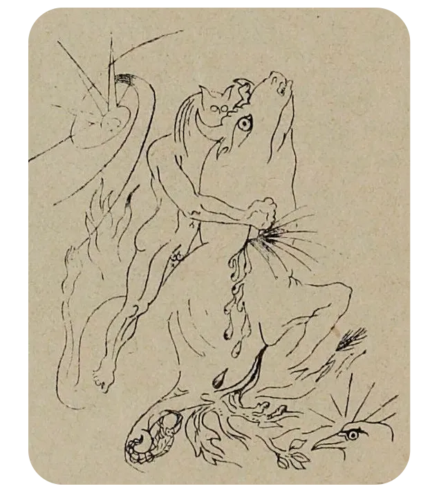
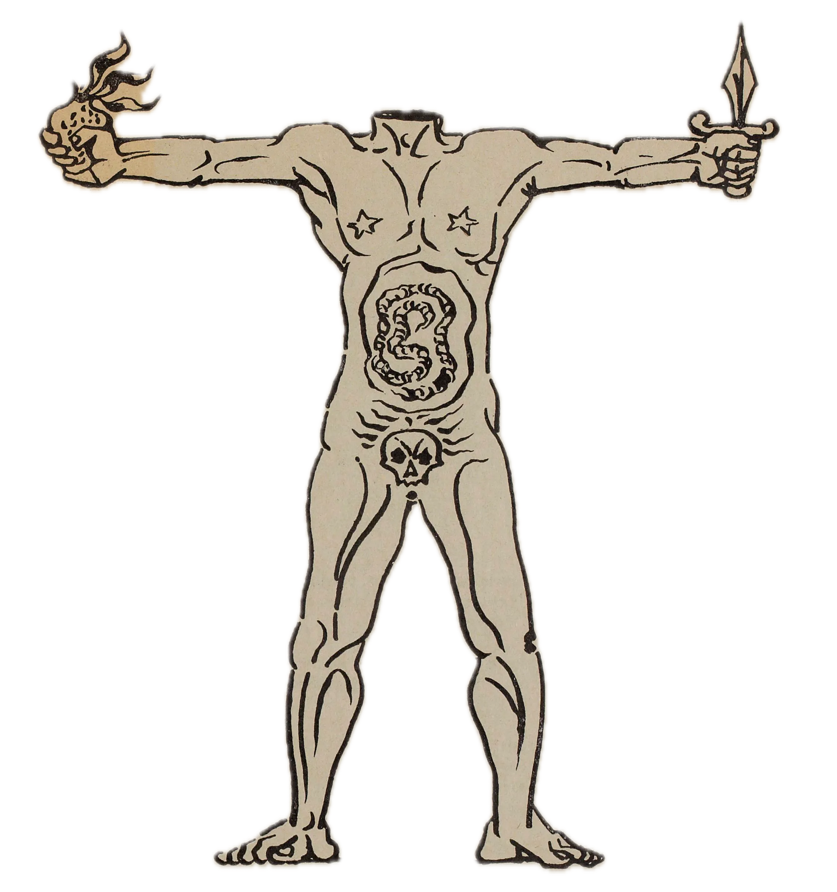

Becoming Bataille: Become the Head of a Headless Revolution — Acéphale Intelligence is a playable social media universe set in 1930s Paris, built from game theory, reconstructed intellectual characters, platform parody, sacred sociology, and deliberately unstable alternate-reality fiction.
You do not need to know Bataille, Caillois or the Collège de Sociologie before playing. This Alternate Reality Game is here to teach you while the characters argue about it. Before Acéphale Intelligence, there was Acéphale. Acéphale was both a journal and the name attached to Bataille’s secret-society experiment. Its emblem was the headless human figure: a refusal of the sovereign Head — God, Führer, State, single leader, rational command — and an attempt to imagine an intense sacred community that would not simply reproduce ordinary political authority. The journal was not just commentary: myth, Nietzsche, the sacred, expenditure, death and ritual were treated as things to be lived, invoked and collectively tested.
Acéphale emerged in Paris in 1936 around Georges Bataille and a small circle of writers, philosophers, artists, and intellectuals seeking to rediscover the sacred beyond established religious, political, and social institutions. Active until 1939, Acéphale was both an avant-garde philosophical journal and a secret society devoted to experimenting with new forms of collective existence, ritual, myth, and spiritual experience.
The name Acéphale derives from the Greek word meaning "headless". It represented the rejection of a supreme authority, a single leader, or a governing principle that subordinates human existence to reason, religion, or political power. Its emblem, designed by the surrealist artist André Masson in collaboration with Bataille, depicted a headless human figure holding a burning heart and a dagger. The image became a symbol of sacrifice, sovereignty, ecstasy, and the possibility of a community without a commanding head.
At its center stood Georges Bataille, whose philosophical investigations into death, eroticism, sacrifice, transgression, and the sacred shaped the project's intellectual and experimental foundations. Influenced particularly by Friedrich Nietzsche, Bataille sought to confront the limits of rational civilization and investigate forms of human experience that escaped conventional morality, utility, and authority.
Georges Bataille, writer and philosopher, conceived Acéphale as more than a literary movement. He envisioned a community united through shared experiences of the sacred rather than through political ideology or institutional religion. For Bataille, sacrifice, excess, ecstasy, and the confrontation with death revealed dimensions of existence that ordinary social structures attempted to suppress.
Pierre Klossowski, philosopher, novelist, and translator, was one of Acéphale's principal early collaborators. His writings explored Nietzsche, theology, desire, myth, and the relationship between religious experience and forbidden forms of thought. Klossowski participated in the secret society and contributed to the journal, helping articulate its critique of established religious and moral authority.
Georges Ambrosino, a physicist and intellectual associated with Bataille, participated in Acéphale's formation and publication. His involvement reflected the group's unusual combination of scientific knowledge, philosophical speculation, and an attempt to investigate experiences that exceeded conventional rational explanation.
André Masson, surrealist painter and illustrator, created Acéphale's defining visual identity. His headless figure embodied the movement's rejection of centralized authority and its fascination with myth, violence, sexuality, and the sacred. Although closely associated with the journal through his artwork, Masson was not a confirmed member of the secret society.
Patrick Waldberg and Isabelle Waldberg belonged to the circle surrounding Bataille's secret experiment. Patrick, a writer and critic, and Isabelle, later recognized as a sculptor, participated in the artistic and intellectual networks through which Acéphale developed its experimental understanding of community.
Henri Dubief, Jacques Chavy, and Jean Dautry were among the individuals identified in surviving records and accounts of the secret circle. Their involvement reflects the broader and partly undocumented network behind Acéphale, whose members were bound by secrecy rather than conventional public membership.
Taro Okamoto, a Japanese painter living in Paris, also participated in the secret society. His involvement connected Acéphale's investigation of mythology, ritual, and collective experience with the experimental artistic movements of the period.
Other intellectuals, including Jean Wahl, Jules Monnerot, and Roger Caillois, contributed to the journal or its wider intellectual environment. Caillois and Michel Leiris were closely associated with Bataille through the Collège de Sociologie but did not join the Acéphale secret society. The distinction between contributors to the publication, members of the secret circle, and associated intellectuals remains important, since Acéphale never possessed a conventional, publicly documented membership.
The public journal Acéphale appeared between 1936 and 1939 in four physical installments comprising five numbered issues. Its subjects included Nietzsche, Dionysus, mythology, the sacred, political authority, madness, war, and death. One of its central intellectual battles concerned the appropriation of Nietzsche by fascist ideology. Bataille and his collaborators challenged attempts to transform Nietzsche's philosophy into a justification for nationalism, authoritarianism, and political domination.
Behind the publication existed a more mysterious organization. The secret society conducted private meetings and symbolic rituals, including gatherings in the forests outside Paris. Its participants sought to create a shared sacred experience outside conventional religion and political organization. The possibility of sacrifice, including human sacrifice, entered the group's discussions, although no completed human sacrifice is documented. Much of its activity remains uncertain because of the secrecy maintained by its participants.
Acéphale was closely connected to the Collège de Sociologie, founded in 1937, but the two were distinct projects. While the Collège investigated the sacred through public lectures and sociological discussion, Acéphale attempted to transform related ideas into lived experiences, private rituals, and an experimental form of community. Georges Bataille and Pierre Klossowski were important connections between the two projects, although their participants and methods were not identical.
Its texts and activities explored myth, ritual, sacrifice, community, sovereignty, violence, ecstasy, and the possibility of a collective existence no longer organized around a single center. Acéphale questioned whether human beings could establish a community without reproducing the hierarchies, authorities, and exclusions they sought to overcome.
The outbreak of the Second World War in 1939 brought the experiment to an end. What survives is fragmentary: essays, declarations, illustrations, correspondence, internal instructions, accounts of rituals, names, and gestures that resist being assembled into a single doctrine. The boundary between philosophical speculation, religious aspiration, artistic experimentation, and collective action remains deliberately unstable.
Acéphale and the Collège were never a tidy superhero team with one official roster. Think of this thread as the game’s cast page: founders, collaborators, artists, participants, auditors, guests and orbiting intellectuals. In Acéphale Intelligence they return as synthetic characters — tutorial staff, enemies of consensus, unreliable narrators and recurring fandom personalities.
The Collège de Sociologie emerged in Paris in 1937 as an experimental intellectual collective centered on Georges Bataille, Roger Caillois, and Michel Leiris. Active until 1939, it brought together writers, philosophers, sociologists, anthropologists, and artists concerned with the hidden forces that bind, divide, and transform collective life.
Its founding declaration was signed by Georges Ambrosino, Georges Bataille, Roger Caillois, Pierre Klossowski, Pierre Libra, and Jules Monnerot. Michel Leiris became one of its central intellectual figures, forming with Bataille and Caillois the trio most closely associated with the Collège's activities.
At its center stood three distinct intellectual voices.
Georges Bataille, writer and philosopher, investigated the sacred, sacrifice, transgression, excess, and the relationship between violence and collective existence. His work explored the limits of rational thought and the powerful experiences through which individuals become absorbed into collective life.
Roger Caillois, sociologist, essayist, and theorist of myth and play, examined ritual, power, social cohesion, mimicry, and the extraordinary forces operating beneath everyday existence. His investigations extended beyond the Collège into a broader theory of human behavior, culminating in his influential book Les Jeux et les Hommes (Man, Play and Games, 1958).
In this later work, Caillois distinguished four fundamental forms of play, each expressing a different relationship between human beings, rules, imagination, and experience:
Agôn — Competition: Games based on rivalry, skill, discipline, and the struggle to overcome an opponent. Examples include chess, competitive sports, and contests of strategy.
Alea — Chance: Games governed by luck, uncertainty, and forces beyond the player's control. Examples include dice, roulette, and lotteries.
Mimicry — Simulation: Games involving imitation, disguise, role-playing, and the temporary adoption of another identity or imaginary reality. Examples include theater, masquerades, and make-believe.
Ilinx — Vertigo: Games and activities that deliberately disrupt perception, balance, and ordinary consciousness through dizziness, speed, movement, or disorientation. Examples include spinning, certain amusement rides, and other experiences of physical vertigo.
For Caillois, these categories were not mutually exclusive. Different forms of play could overlap, revealing the relationships between competition, fate, identity, and the pursuit of extraordinary experiences. He also distinguished between Paidia, spontaneous and improvisational play, and Ludus, play shaped by rules, discipline, and structured challenges.
Although this classification was published nearly two decades after the Collège's dissolution, it extended Caillois's enduring investigation into the relationships between individual experience, collective behavior, ritual, and social order.
Michel Leiris, writer and ethnographer, approached the sacred through personal experience, language, autobiography, and the hidden rituals of ordinary existence. His work investigated the relationship between intimate psychological experiences and the larger cultural structures that give them meaning.
Beyond these central figures, the Collège attracted a wider constellation of intellectuals. Pierre Klossowski contributed reflections on religion, desire, and mythology. Jules Monnerot explored collective psychology and social movements. Georges Ambrosino and Pierre Libra were among the original signatories, while figures such as Alexandre Kojève, Jean Wahl, Jean Paulhan, and Denis de Rougemont participated in its wider intellectual environment. Walter Benjamin was connected to this circle and was invited to lecture, although his proposed lectures never took place.
The Collège was not a conventional academic institution with a fixed membership. It functioned instead as an experimental intellectual space organized around lectures, discussions, and encounters. Its participants did not necessarily share a unified philosophical position. Their disagreements, contradictions, and competing interpretations were part of the experiment itself.
Its discussions moved between sociology, anthropology, philosophy, literature, myth, ritual, sacrifice, play, and the sacred. Rather than treating society as a stable structure, the Collège sought to examine the intensities, exclusions, and collective energies that could transform it. Against the political upheavals of late-1930s Europe, its participants questioned the relationship between individual experience, collective identity, authority, and the dangerous attraction of power.
This Alternate Reality Game (ARG) is a speculative docufiction and mockumentary inspired by true events, historical documents, and the writings of real historical figures. Certain passages are algorithmic pastiches that imagine, reconstruct, distort, or extend historical voices within the project’s fictional and artistic framework. While history provides the source material, these passages belong to the fiction and should not be understood as authentic quotations, statements, or historical documents. Real persons, institutions, organizations, products, and brands may appear, be referenced, fictionalized, exaggerated, or otherwise transformed for purposes of parody, satire, commentary, criticism, and artistic expression. Any fictional words, actions, opinions, affiliations, or circumstances attributed to identifiable persons are part of the narrative device and should not be taken as statements of fact. No endorsement, sponsorship, association, or authorization by any person, estate, institution, organization, or brand mentioned or depicted is implied. Any resemblance between fictional characters or situations and persons or events not explicitly identified as historical or real-world references is coincidental. Nothing in this publication is intended to defame, impersonate, misrepresent, or cause personal, professional, reputational, or commercial harm. Trademarks, names, logos, and other identifying references remain the property of their respective owners and are used solely within the game’s fictional, parodic, critical, documentary, or artistic context.
Created by ARTOLDO